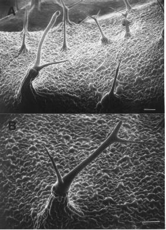

Figure 5. SEM analysis of a mutant sector affected in trichome subsidiary
cell expansion and trichome branch formation. A) Field of trichomes on a
base of abnormally expanded subsidiary cells. B) Higher magnification of
an abnormally branched trichome on a base of longitudinally expanded subsidiary
cells. The bar in the lower left of each figure represents 100 µ.